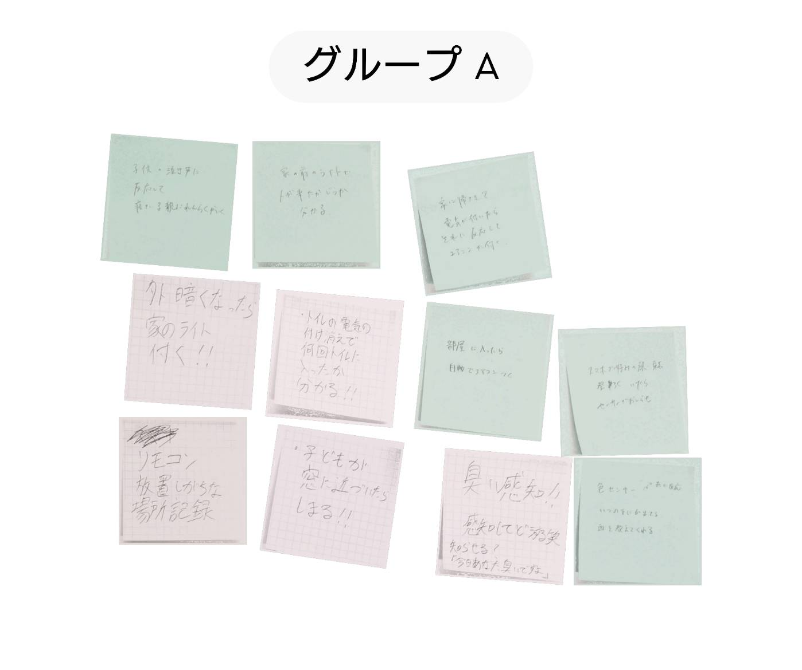

あると」<!DOCTYPE html>
<html lang="jp">
<head>
    <!-- ⑥↓タイトルを変えてみよう -->
    <title>IoT2</title>
    <!-- ⑤スタイルシートの設定をしよう -->
    <link rel="stylesheet" href="./css/style.css">
</head>
<body>
    <br>
    <div>
        IoTを使ったデータの活用について、私たちのグループでは生活面で役に立つものが多数出てきました。<br>
        この製品たちにおいて、データの保存によってできる事は、日常生活の記録や人との繋がりの促進などがあると思います。<br>
        これらによって病気の早期発見や孤独死の回避と早期発見が見込めます。
    </div>


</body>
